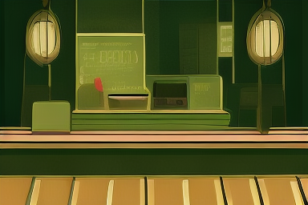

RAZA LABS / CREATIVE AI
Dastaan
AI-assisted storyboarding studio
An independent AI product experiment by Ali Raza.
The animatic is an abstract timing preview. Template mode uses written patterns; local AI mode uses your configured Ollama model. Neither mode generates footage or records narration.
01 / The brief
02 / The timing room
Preview captions use the planned scene durations. Check reading speed and shot feasibility before production.
03 / Shape every scene
Edit titles, visuals, narration, and direction. Timing stays consistent with the brief.
Projects and edits stay in memory until you export. Imports are validated before replacing the current project.
04 / Render a visual direction locally
Generate one planning frame with Diffusers and the public tiny-sd model on your own machine. Model weights download on first use.
